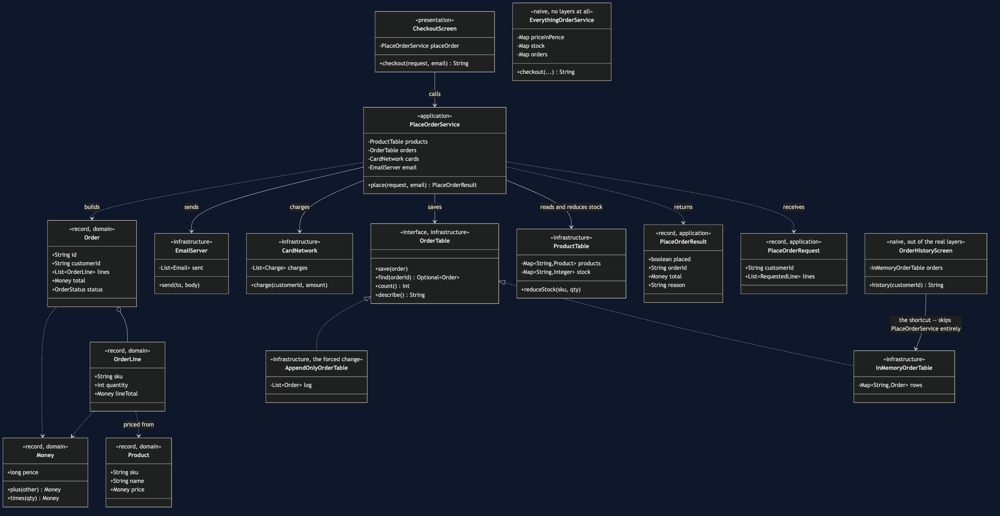
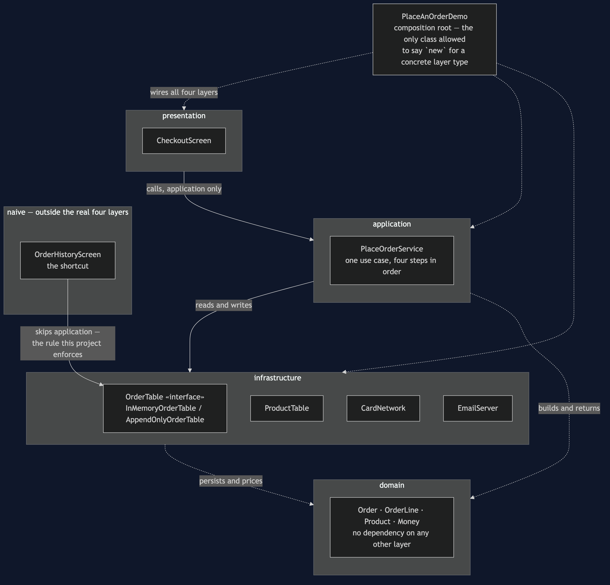
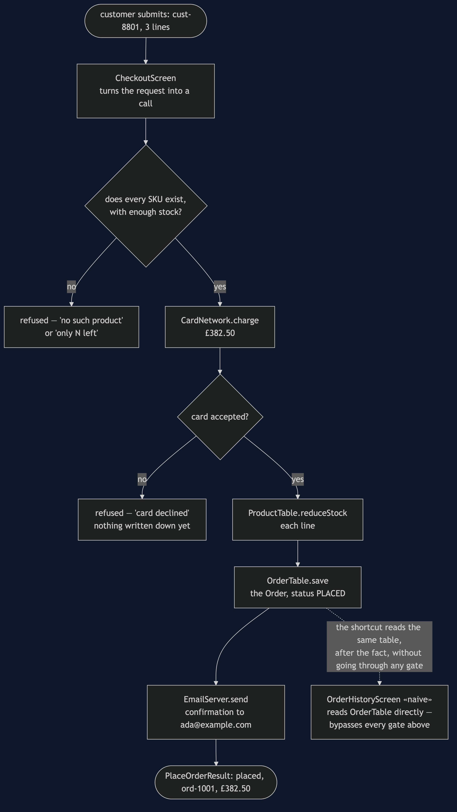
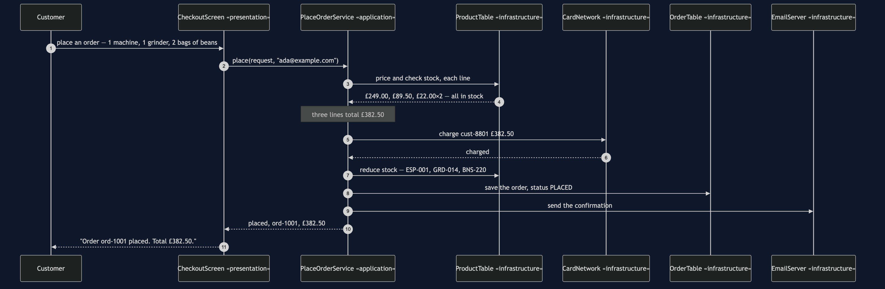
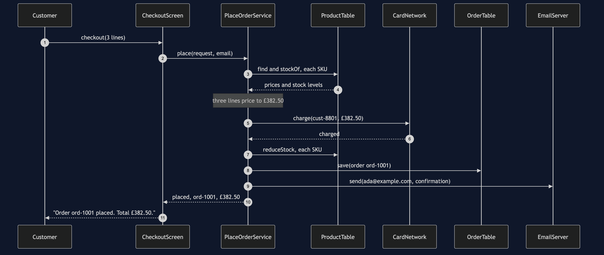
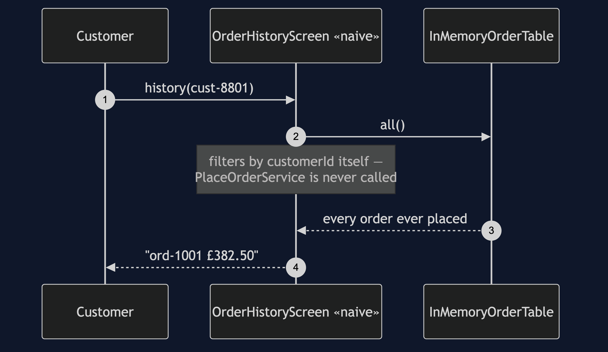
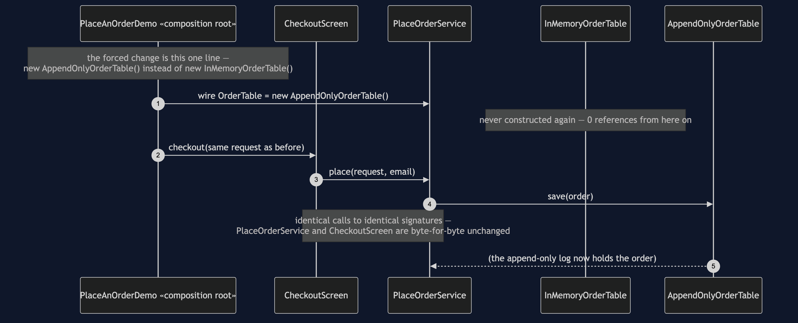
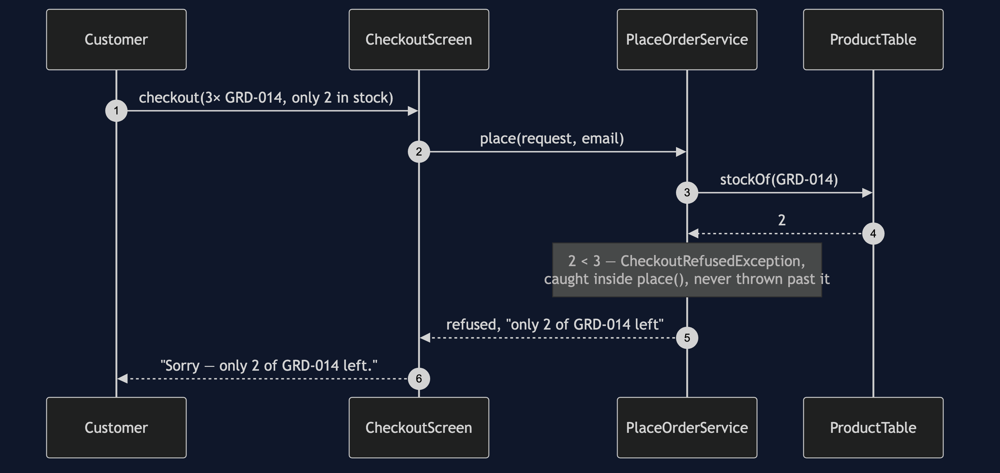

Layered Architecture Pattern
In this category the structure is the content, so here it is before a word of explanation:
src/main/java/com/jk/explore/layered/
├── PlaceAnOrderDemo.java composition root — the five acts
├── ForcedChange.java counts the bill, from real files on disk
│
├── presentation/ ← may depend only on application
│ └── CheckoutScreen.java
├── application/ ← may depend only on infrastructure
│ ├── PlaceOrderService.java
│ ├── PlaceOrderRequest.java
│ └── PlaceOrderResult.java
├── domain/ ← depends on nothing else, anywhere
│ ├── Order.java
│ ├── OrderLine.java
│ ├── OrderStatus.java
│ ├── Product.java
│ ├── Money.java
│ └── CheckoutRefusedException.java
├── infrastructure/ ← the bottom layer
│ ├── OrderTable.java «interface» — the forced change swaps this
│ ├── InMemoryOrderTable.java
│ ├── AppendOnlyOrderTable.java the replacement
│ ├── ProductTable.java
│ ├── CardNetwork.java
│ ├── EmailServer.java
│ └── PaymentDeclinedException.java
│
└── naive/ ← kept on purpose, outside the real layers
├── EverythingOrderService.java no layers at all
└── presentation/
└── OrderHistoryScreen.java the shortcut — skips applicationSeventeen classes make the real architecture; two more show what it replaces. Every arrow between the four real packages points downward, one layer at a time, and src/test/java/.../layered/ArchitectureTest.java is what checks that this listing stays true.
Split a program into stacked layers — presentation, application, domain, infrastructure — where each layer depends only on the layer directly beneath it, and enforce that rule with a test rather than a diagram.
This is the reference project for the architectural-design-patterns category: the architecture nearly every reader already has, and the one whose failure mode everyone has lived with — layers that exist as folders and are violated by one convenient call that nothing in the build objects to.
Run
./gradlew runFive acts, then the feature the whole category shares.
Act one is the version with no layers at all.
ONE. No layers at all.
ord-1001 £382.50
it works. 74 lines, and the pricing cannot be tested
without building the catalogue map, the order map and the outbox.Act two is the real four layers, working.
TWO. Four layers, and the same order.
Order ord-1001 placed. Total £382.50.
stock now ESP-001 3, GRD-014 1, BNS-220 38
the screen has two imports, both of them the application layer.
it does not know the word 'map'.Act three is the shortcut, and it is this project's whole lesson.
THREE. The one call that ruins them.
ord-1001 £382.50
that screen skipped the application layer and read storage directly.
it compiles, it is tidy, the tests pass, and it shipped.
NOTHING IN THE BUILD OBJECTED.Act four is the rule, written where a build can read it — see Test below for what it prints when it goes red.
Act five is the forced change, counted.
FIVE. Replace the entire storage layer.
store is now an append-only log, read backwards
Order ord-1001 placed. Total £382.50.
orders held: 1
FORCED CHANGE: replace the storage layer
a map keyed by order id -> an append-only log, read backwards
files added : 1 infrastructure/AppendOnlyOrderTable.java
files modified : 1 PlaceAnOrderDemo.java (the composition root)
lines changed : 1
classes in the four layers : 17
of those, opened : 1
of those, never opened : 16
AND THE ONE THAT TOOK THE SHORTCUT
naive/presentation/OrderHistoryScreen.java imports InMemoryOrderTable
it went straight to storage, so the swap does not compile for it
every screen that went through the application layer: untouchedAnd the acceptance line every project in this category prints identically:
ACCEPTANCE
order ord-1001 for cust-8801: PLACED, 3 lines, £382.50
stock ESP-001 3, GRD-014 1, BNS-220 38
charged cust-8801 £382.50 once
sent 1 confirmation to ada@example.com
refused: not enough stock, unknown product, payment declinedTest
./gradlew testEighteen tests. Three assert the dependency rule holds on the real four layers; one widens the same rule to the naive package on purpose and asserts it fails, printing the exact message a developer would see. The rest cover the use case directly — pricing, the three refusal reasons, that a declined card leaves no order and no reduced stock behind, and that the demo's output is deterministic:
Architecture Violation [Priority: MEDIUM] - Rule 'no classes that reside in
a package '..presentation..' should depend on classes that reside in a
package '..infrastructure..'' was violated (1 time):
Class <...naive.presentation.OrderHistoryScreen> depends on class
<...infrastructure.InMemoryOrderTable> in (OrderHistoryScreen.java:24)A green test that has never been seen red proves nothing. This one has been seen red, on purpose, and the message names the class and what it reached for.
Technologies and versions
| What | Version | Why it is here |
|---|---|---|
| Java | 21 | The repository standard, via the Gradle toolchain block |
| Gradle | 9.2.1 | The wrapper in this directory; no separate install needed |
| JUnit 5 | 5.10.2 | Test runner |
| ArchUnit | 1.5.0 | The one library this whole category takes, and the reason is the category's thesis: a dependency rule written as an ArchUnit test is the architecture, executably. noClasses().that().resideInAPackage("..presentation..").should().dependOnClassesThat().resideInAPackage("..infrastructure..") reads as English, fails with the offending class named, and turns a whiteboard promise into a build failure. It is a test-only dependency — nothing in src/main knows it exists. |
No Spring, no database, no web framework, no container. The whole project — code, tests, documents and video — runs offline with a JDK and nothing else.
Learning Material
| Document | What it covers |
|---|---|
docs/problem-statement.md | The four layers, and the one call that ruins them |
docs/layered-architecture-pattern-explained.md | The pattern, the rule as a test, the forced change, and the bill |
docs/class-diagram.md | The types, and which arrows are missing |
docs/architecture-diagram.md | What is allowed to know about what |
docs/data-flow-diagram.md | One order, and the gates it has to pass |
docs/sequence-diagram.md | Who calls whom, in order — written for a listener with the screen off |
docs/uml-diagram.md | Four sequences: the real call, the shortcut, the forced change, a refusal |
docs/animation.html | Five steps in a browser, from no layers to the forced change |
docs/prerequisites.md | What you need to know, and what you explicitly do not |
docs/session.md | A one-hour taught session with three exercises |
docs/spec.md | The generated specification, with measured test counts and timings |
docs/youtube.md | Title, description and chapters for the video |
The pattern in one picture
The class diagram, and the single most important thing on it is which arrows are missing. CheckoutScreen has no line to anything in infrastructure. Order, Money and Product have no line to anything outside domain.

What is allowed to know about what
Four stacked boxes, every solid arrow pointing down one layer at a time, and one dashed box off to the side showing the shortcut this project's architecture test exists to catch.

How one order moves
Every gate that can refuse the order sits before the step it protects, so a refusal never leaves a half-placed order behind.

Who calls whom, in order
The sequence written to work with the screen off: a customer calls the screen, the screen calls the service and nothing else, and the service charges the card before it writes anything down.

All four sequences
The full set from docs/uml-diagram.md: the real call, the shortcut, the forced change, and a refusal.
One. One order, through all four layers. The call travels straight down and never sideways.

Two. The shortcut — a screen that skips the application layer. No PlaceOrderService box appears on this diagram at all.

Three. The forced change — storage is replaced, nothing above notices. Sixteen of seventeen classes make no appearance in this diagram.

Four. A refusal — not enough stock. CardNetwork never appears; the stock check runs first.

Video
The narrated walkthrough is built from video/scenes.py by video/build_video.sh. The rendered file is not committed — see the repository README for why.
When this is too much
Four layers and an architecture test are worth their weight for anything with more than one caller of the same business logic, or anything expected to outlive its first storage choice. They are not worth it for a script that reads a file, does one calculation, and prints a result once — a four-package skeleton around fifteen lines of real logic is not layering, it is packaging. If writing the request object, the result object and the service method for a new screen would take longer than the screen is worth, the layers have stopped paying for themselves.
Where this sits
This is project 63, first of the five in architectural-design-patterns — the category's reference project, built and published first because it is the architecture nearly every reader already has.
The next project, MVC, takes the same separation to the user-facing edge. The one after that, Hexagonal Architecture, changes the one thing this project admits it does not fix: the application layer still names infrastructure by package, because the storage interface is defined down there rather than up here. Moving that interface into the core, so storage implements it instead of defining it, is the entire difference between this project and the next one — and it is only one move.
Also available with a framework
Layered Architecture with Spring Boot Pattern reruns this idea on a real framework, and shows what the framework adds and where it can undo the pattern. Watch this project first.